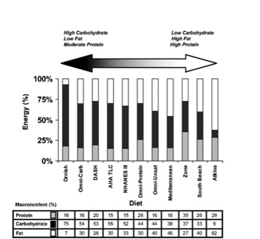

Macronutrients
Almost all diet plans are based on distribution of macronutrients in required ratios, as shown in data table at the bottom of the attached image.
Water Tracking
Water intake has a measured positive effect on mineral uptake as part of calorie consumption. Unfortunately the body's natural process to report thirst are delayed past the most effective time window for nutrient uptake, in order to offset this intake must be "ahead" of the body's natural thirst response. Intaking fluid in a steady stream during waking hours helps best accomplish this.
So why stop at 128 oz in our track?
Balance is important. Suggested intake for a highly active male is 121.2 oz a day, 128oz happens to be a full gallon so for ease of remembering your goal we elected to "round" to 128.
Where are my macros? Help!
Turn over your food and check out the food label! Please do not forget to take into account serving size and multiply stated values by total intake.